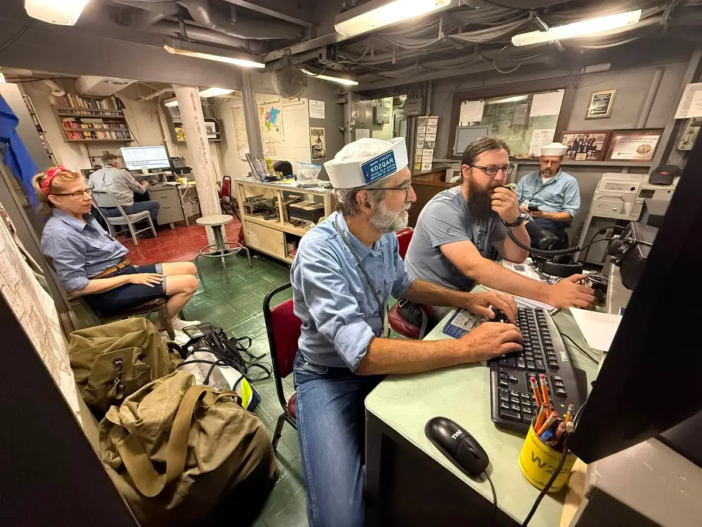
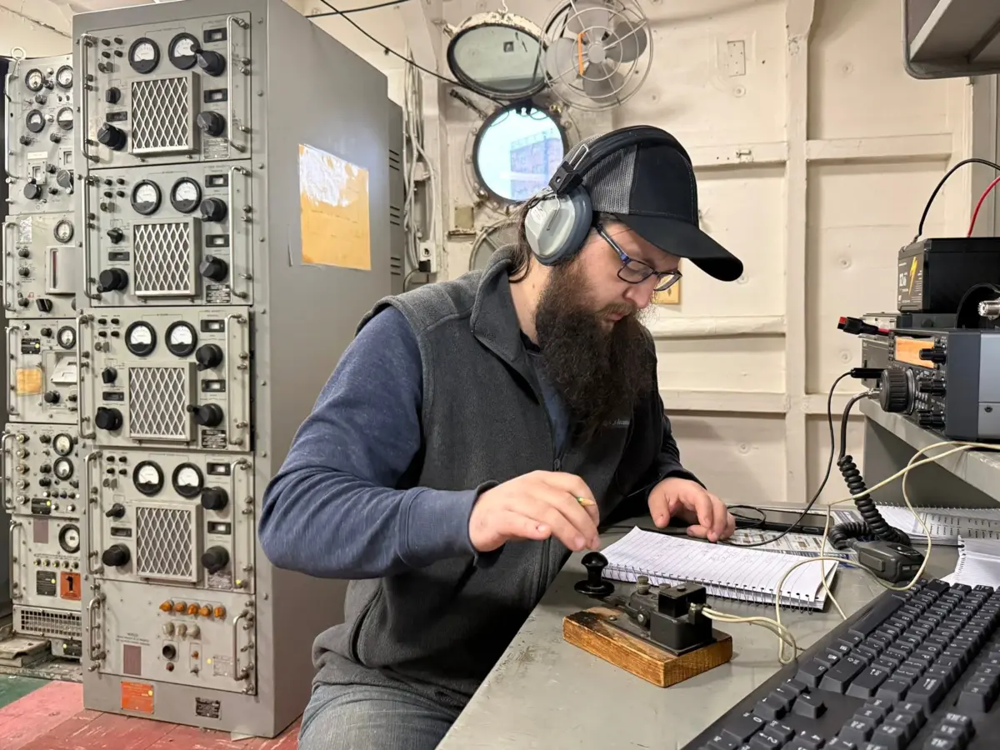

Check out the photo gallery of ham radio pictures
Photo Gallery
Radios
Xiegu G90 [20W HF]
TidRadio TDH3 [5W UHF/VHF]
Kenwood TS-830s: Kenwood Hybrid in need of some work to bring it back online
Kenwood TS-520: Working Kenwood Hybrid (Solid-state RX with tube finals for transmitting)
Activities
USS Little Rock
The Radio Association of Western NY (RAWNY) clubhouse is hosted aboard the USS
Little Rock in the Buffalo Naval Park Museum. W2PE club members operate from
there most weekends and open the radio room to the public acting as ambassadors
amateur radio and sharing part of the ships history with the public.


Parks on the Air (POTA)
I've done a bit of Parks on the Air, mostly on the Erie Canal Hertiage Corridor
park #US-6532 and often at the
W2PE clubhouse
aboard the USS Little Rock.